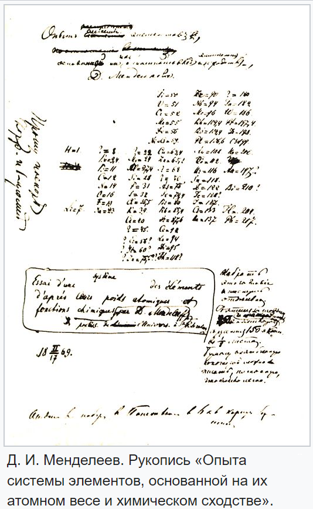

О Таблице
Периодическая система химических элементов
Периоди́ческая систе́ма хими́ческих элеме́нтов (табли́ца Менделе́ева) — классификация химических элементов, устанавливающая зависимость различных свойств элементов от заряда их атомного ядра. Периодическая таблица была представлена независимо и почти одинаково двумя химиками в 1869 году: сначала русским Дмитрием Менделеевым, а через несколько месяцев немцем Лотаром Мейером и приведена к традиционному графическому виду в 1871 году. Всего предложено несколько сотен вариантов изображения периодической системы (аналитические кривые, таблицы, геометрические фигуры и т. п.). В современном варианте системы предполагается сведение элементов в двумерную таблицу, в которой каждый столбец (группа) определяет основные физико-химические свойства, а строки представляют собой периоды, в определённой мере подобные друг другу.
К середине XIX века были открыты 63 химических элемента, и попытки найти закономерности в этом наборе предпринимались неоднократно. В 1829 году Иоганн Дёберейнер опубликовал найденный им «закон триад»: атомная масса многих элементов приблизительно равна среднему арифметическому двух других элементов, близких к исходному по химическим свойствам (стронций, кальций и барий; хлор, бром и иод и др.). Первую попытку расположить элементы в порядке возрастания атомных весов предпринял Александр Эмиль Шанкуртуа (1862), который создал «Теллуров винт», разместив элементы на винтовой линии и отметил частое циклическое повторение химических свойств по вертикали. Эти модели не привлекли внимания научной общественности
Интересный факт
По легенде, мысль о системе химических элементов пришла к Менделееву во сне, однако известно, что однажды на вопрос, как он открыл периодическую систему, учёный ответил: «Я над ней, может быть, двадцать лет думал, а вы думаете: сидел и вдруг… готово»
Немного истории
В 1866 году свой вариант периодической системы предложил химик и музыкант Джон Александр Ньюлендс, модель которого («закон октав») внешне немного напоминала менделеевскую, но была скомпрометирована настойчивыми попытками автора найти в таблице мистическую музыкальную гармонию. В этом же десятилетии было предпринято ещё несколько попыток систематизации химических элементов, и ближе всего к окончательному варианту подошёл Юлиус Лотар Мейер (1864). Однако главное отличие его модели заключалось в том, что за основу периодичности была взята валентность, которая не является единственной и постоянной для отдельно взятого элемента, и поэтому такая таблица не могла претендовать на полноценное описание физики элементов и не отражала периодического закона.
Написав на карточках основные свойства каждого элемента (их в то время было известно 63, из которых один — дидим Di — оказался в дальнейшем смесью двух вновь открытых элементов празеодима и неодима), Менделеев начинает многократно переставлять эти карточки, составлять из них ряды сходных по свойствам элементов, сопоставлять ряды один с другим.
В результате раскладывания этого «химического пасьянса», 17 февраля (1 марта) 1869 года был завершён самый первый целостный вариант Периодической системы химических элементов, который получил название «Опыт системы элементов, основанной на их атомном весе и химическом сходстве», в котором элементы были расставлены по девятнадцати горизонтальным рядам (рядам сходных элементов, ставших прообразами групп современной системы) и по шести вертикальным столбцам (прообразам будущих периодов). Эта дата знаменует собой открытие Менделеевым Периодического закона, но правильнее считать эту дату началом открытия.
Согласно окончательной хронологии первых публикаций Таблицы Менделеева, впервые Таблица была опубликована 14-15 марта (26-27 марта) 1869 года в 1-м издании учебника Менделеева «Основы Химии» (ч. 1, вып. 2). И уже после этого, осознав во время двухнедельной поездки по провинции великое значение своего открытия, Менделеев по возвращении в Петербург заказал в середине марта в типографии «Общественная польза» отдельные листки с этой таблицей, которые были напечатаны 17 марта (29 марта) 1869 года специально для рассылки «многим химикам». Позднее, в начале мая 1869 года, «Опыт системы элементов» был напечатан с химическим обоснованием в программной статье Менделеева «Соотношение свойств с атомным весом элементов» (журнал Русского химического общества).